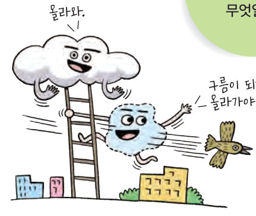
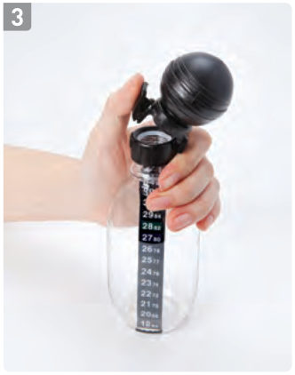
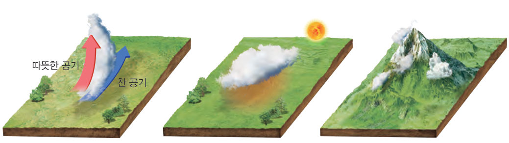
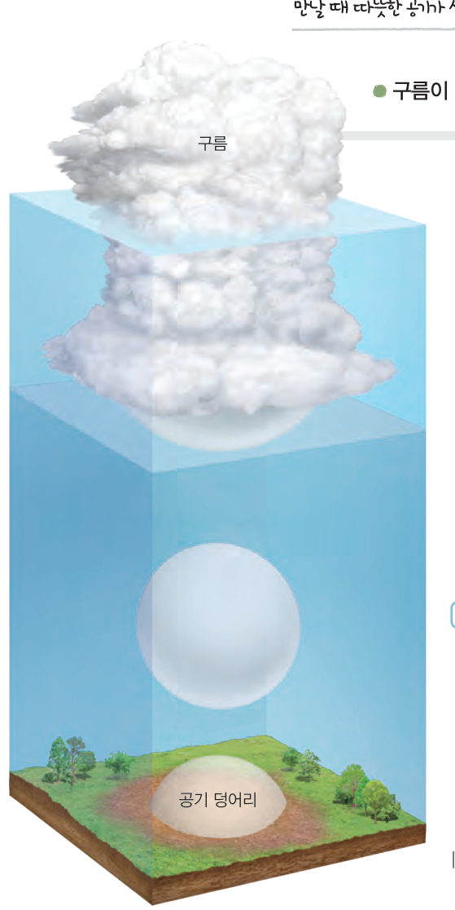

하늘에 구름이 만들어지는 까닭은 무엇일까? 가상 페트병으로 단열 팽창과 응결을 관찰하고, 공기 덩어리를 직접 띄워 올려 이슬점에 도달하는 높이에서 구름이 생기는 모습을 확인해 보자.
구름은 공기 중의 수증기가 물방울로 변하여 모여 있는 것이다. 다음 탐구로 공기 중의 수증기가 물방울로 변하는 과정을 알아보자.

페트병의 뚜껑을 열면 페트병에서 공기가 빠져나간다. 이때 페트병 내부에서는 공기가 팽창하므로 온도가 낮아진다. 이와 같이 공기가 주변과 열을 주고받지 않고 팽창하는 현상을 단열 팽창이라고 하며, 단열 팽창 하는 공기의 온도는 낮아진다. 또한, 뚜껑을 열면 공기 중의 수증기가 물로 변하는 현상인 응결이 일어나 내부가 흐려진다. (이슬점: 공기가 포화 상태에 도달하여 응결이 시작되는 온도)
| 평가 기준 | 스스로 평가 |
|---|---|
| 탐구 기능 페트병 내부 온도를 정확히 측정하였는가? | |
| 탐구 기능 공기가 팽창할 때의 온도 변화를 옳게 설명하였는가? | |
| 인성 토의할 때 모둠 구성원의 의견을 존중하였는가? |

공기가 상승하면 구름이 만들어질 수 있다. 따뜻한 공기와 찬 공기가 만나거나 지표면의 일부가 가열될 때 공기는 상승한다. 그리고 공기가 이동하다가 산을 만나는 경우에도 상승한다.
수증기를 포함하고 있는 공기 덩어리가 상승하면 단열 팽창 하여 공기 덩어리의 온도가 낮아진다. 이때 공기 덩어리는 포화 수증기량이 감소하고 상대 습도가 높아진다. 공기 덩어리가 계속 상승하여 기온이 이슬점에 도달하면 수증기가 응결하여 물방울이 된다. 이러한 과정으로 물방울이 생겨 하늘 높은 곳에 떠 있는 것이 구름이다.

| ⑴ 간이 가압 장치를 여러 번 누르면 페트병 속의 공기가 압축된다. | |
| ⑵ 뚜껑을 열면 페트병 속의 온도는 낮아진다. | |
| ⑶ 구름은 간이 가압 장치를 누를 때와 같은 원리로 발생한다. | |
| ⑷ 페트병에 향 연기를 넣으면, 뚜껑을 열 때 내부에서 변화가 일어나지 않는다. |
| ⑴ 따뜻한 공기와 찬 공기가 만나 공기가 상승할 때 | |
| ⑵ 지표면의 일부가 냉각될 때 | |
| ⑶ 공기가 산의 경사면을 타고 내려올 때 |
| 평가 기준 | 스스로 평가 |
|---|---|
| 단열 팽창에 따른 응결 현상을 설명할 수 있다. | |
| 구름의 생성 과정을 설명할 수 있다. |